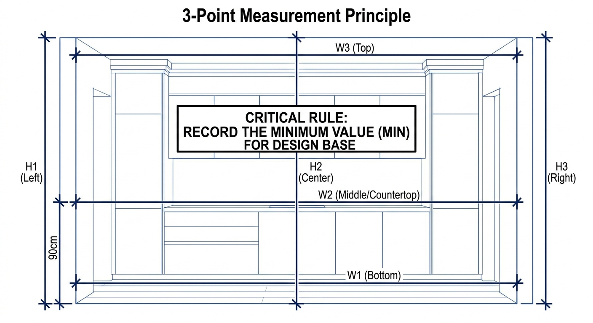
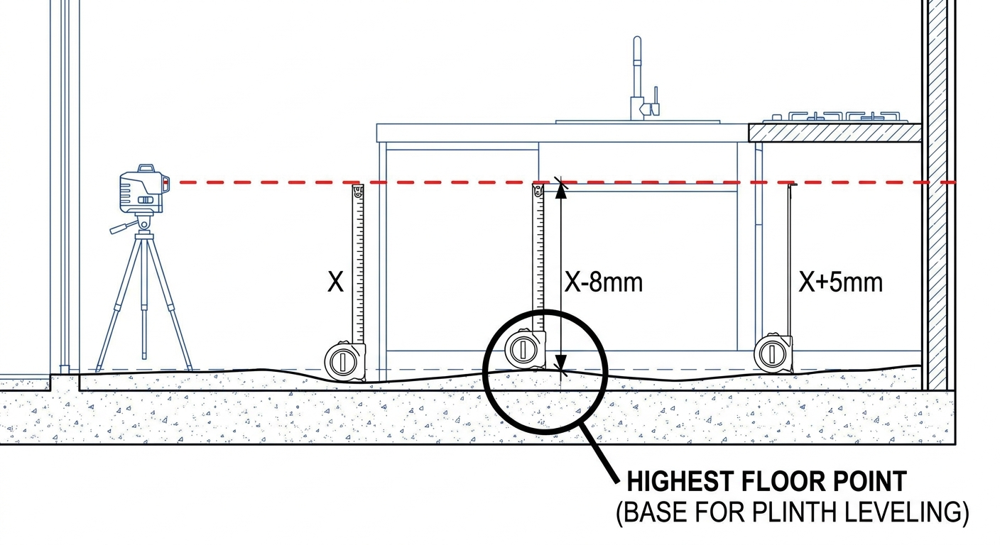
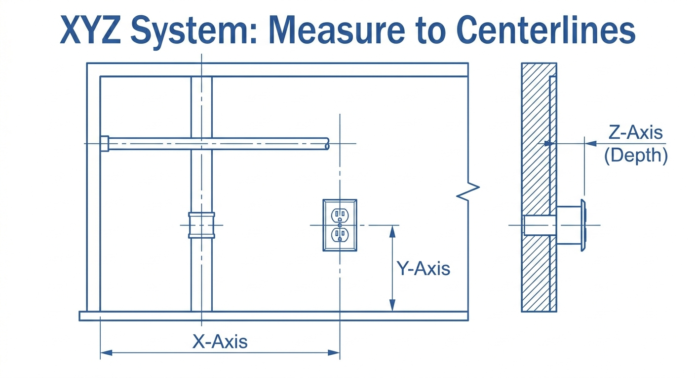

KARTA POMIAROWA (ETAP 1.1)
| Inwestycja / Klient: | Data: |
🏗️ A. STAN ZEROWY (Co mierzymy?)
Brakujące warstwy (ile mm doliczyć do projektu?):
📐 B. GEOMETRIA POMIESZCZENIA
🧱 Rodzaj ściany nośnej (pod szafki górne):Zasada 3 Punktów (Szukaj MIN)

Kąty i Piony

Poziom Podłogi (Szukaj MAX)

Zawsze mierz od lewej do prawej. Zaznacz najmniejszy wymiar jako BAZĘ do projektu.
| Wymiar [mm] | Dół / Lewo | Środek | Góra / Prawo | BAZA (MIN) | Uwagi |
|---|---|---|---|---|---|
| Szerokość Ściany A (Główna) | |||||
| Szerokość Ściany B (Boczna) | |||||
| Wysokość pomieszczenia |
|
Kąt Narożnik Lewy:
stopni Kąt Narożnik Prawy: stopni |
Odchyłka podłogi (ile mm ucieka?):
Odchyłka ścian od pionu: |
🪟 Detale Okna i Parapetu (Analiza Kolizji):
Wysokość od podłogi do spodu parapetu: mm | Głębokość parapetu: mm | Oś okna (od narożnika): mm
Wysokość od podłogi do spodu parapetu: mm | Głębokość parapetu: mm | Oś okna (od narożnika): mm
⚡ C. INSTALACJE I PRZYŁĄCZA
Punkt Referencyjny (Baza 0,0):
1. Jeden Punkt Referencyjny

2. System XYZ (Do osi)

3. Pomiar Narastający

| Rodzaj przyłącza | Oś X (od Bazy) [mm] | Oś Y (od podłogi) [mm] | Oś Z (Głębokość) / Uwagi |
|---|---|---|---|
| Woda (Zimna) | |||
| Woda (Ciepła) | |||
| Odpływ (Kanalizacja) | |||
| Gniazdo: Zmywarka | |||
| Gniazdo: Piekarnik | |||
| Gniazdo: Lodówka | |||
| Siła (400V - Indukcja) | |||
| Kratka wentylacyjna | |||
| Gniazda robocze (Blat) | |||
| Gaz (Zawór) | |||
|
Przeszkody naścienne (Rury CO, skrzynki, termostaty): |
|||
⚠️ KONTROLA ZMYWARKI: Czy za planowanym miejscem zmywarki ściana jest w 100% pusta?
🚚 D. LOGISTYKA I OTOCZENIE
|
Winda (Szer x Gł x Wys):
Przekątna windy (max dł. blatu): mm |
Klatka schodowa (zakręty?):
Drzwi wejściowe (szerokość): mm |
| Parking (Rozładunek busa): | |
📸 E. DOKUMENTACJA I USTALENIA (Zabezpieczenie)
|
Zadania po stronie Klienta (do wykonania PRZED montażem): 1. 2. 3. |
|
.................................................................................... Czytelny podpis Klienta (akceptacja ustaleń) |